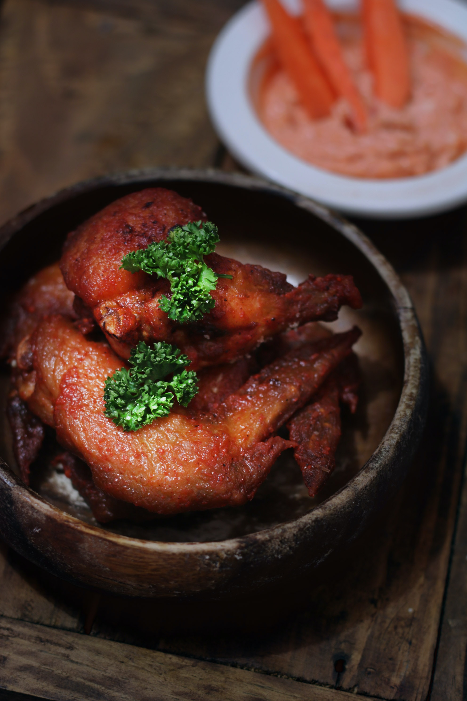

Meat
What is meat?
Meat is animal flesh that is eaten as food.
What else is there about meat?
Humans have hunted and killed animals for meat since prehistoric times. The advent of civilization allowed the domestication of animals such as chickens, sheep, rabbits, pigs and cattle. This eventually led to their use in meat production on an industrial scale with the aid of slaughterhouses.
The Most Popular Meats
- Beef (cow)
- Chicken
- Pork (pig)
- Duck
Meat Dishes
- Beef Stew
- Fried Chicken
- BBQ Pork Bun
Learn More Below!
Video: Is Meat Bad for You? Is Meat Unhealthy?



Sources
- Wikipedia: Meat
- WorldAtlas: How Much Meat Do Americans Eat?
Learn About Vegetables!
Learn About Fruits!
Back to Home Page